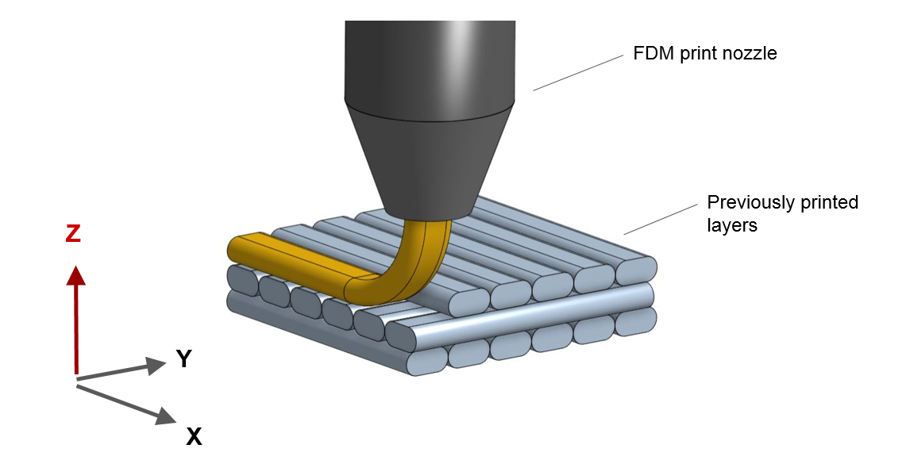
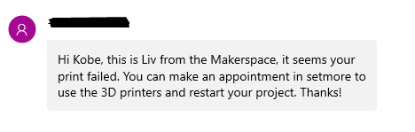

Week 6: FDM Printing
Whoever named these printers is a nerd
How FDM Printing works
Fused deposition modeling , or FDM, printing is based on filaments. The printer uses heat to melt and extrude the filament onto a tray as a layer of the design, starting from the bottom. The filament soldifies into the user's design.
How PrusaSlicer works

PrusaSlicer is the program we use to interact with the Prusa FDM printers in the fab lab. PrusaSlicer can take a 3d model, from a file type like stl, and generate instructions on how to 3d print that model in a Prusa 3d Printer after clicking "slice now". The instructions for the printer are saved as G-code, which the printer uses to actually print out a model.
Designing in Fusion360
Befor going to PrusaSlicer, I would have to design the pot I wanted to print in Fusion360.
1. The first part of this process was making the base. I used two circles with dimensions matching that of my desk organizer and extruded the ring created a litle over .25 inches.
1. The first part of this process was making the base. I used two circles with dimensions matching that of my desk organizer and extruded the ring created a litle over .25 inches.
2. I then used two polygons, one right above the base and the other 3.5 inches above the first, (my final design had 10 sides on each polygon), and used loft to create the body the containing part
2. I then used two polygons, one right above the base and the other 3.5 inches above the first, (my final design had 10 sides on each polygon), and used loft to create the body the containing part
3. I used loft again, but this time with 2 circles, one an inch above the base, and the other at the top of the pot, and made it a cut, this is the hole in pot for actually holding things. The reason I used loft and not just extrude is because the circles are different sizes and were almost different shapes.
4. I used emboss to put my name on the base of the pot
(go me!)
5. And with that, my design was ready to print. I rendered and then exported this as an STL file to move on to PrusaSlicer.
5. And with that, my design was ready to print. I rendered and then exported this as an STL file to move on to PrusaSlicer.
First Attempt: failure
About an hour after I had put my design to print, I recieved a text saying that my print has failed and that I should try again. I would use the info I could gather from the failed attempt to make my final design better than before.